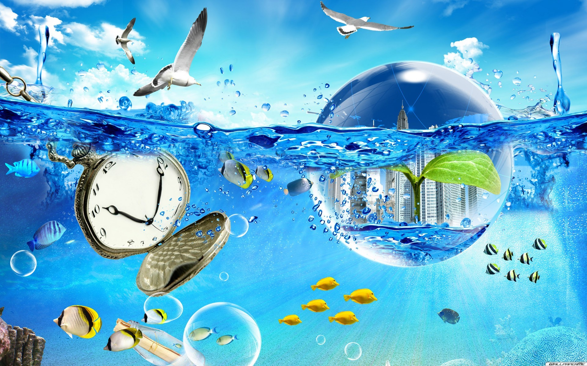
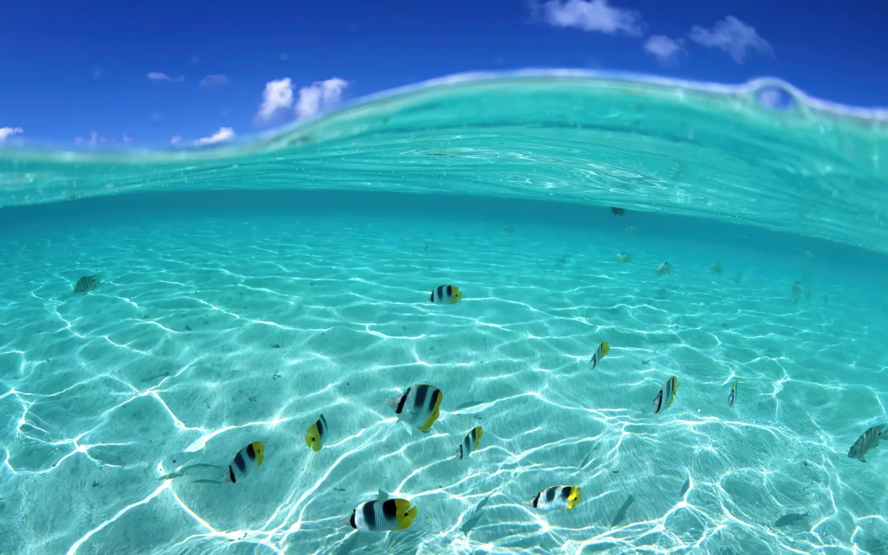
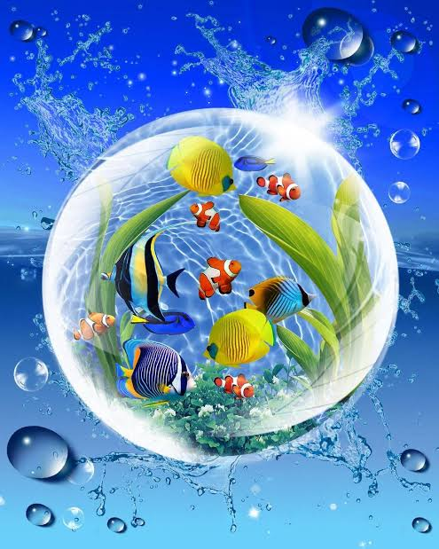

Shark clasper allometry
I'm looking at how clasper length changes as sharks grow, and how that relates to sexual maturity. I'm using specimen images to measure body and clasper length.
Still collecting measurements.
I study Marine Science at UConn. I'm interested in fish biology, especially sharks.
This is where I keep the things I'm working on.
My projects →


I'm looking at how clasper length changes as sharks grow, and how that relates to sexual maturity. I'm using specimen images to measure body and clasper length.
Still collecting measurements.
I've helped with dissections, stomach content analysis, and data collection for work on flounder food webs in Long Island Sound.
I've also worked with fish scale images and RFishBC in R.